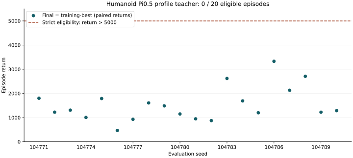
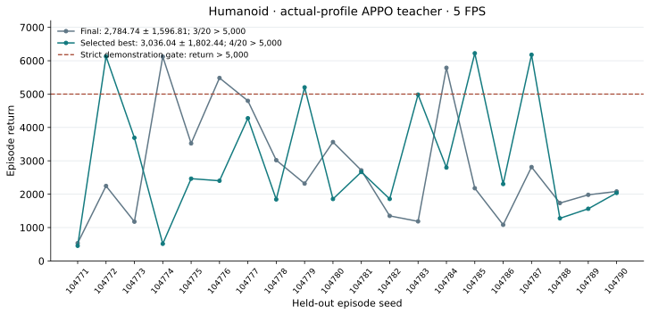
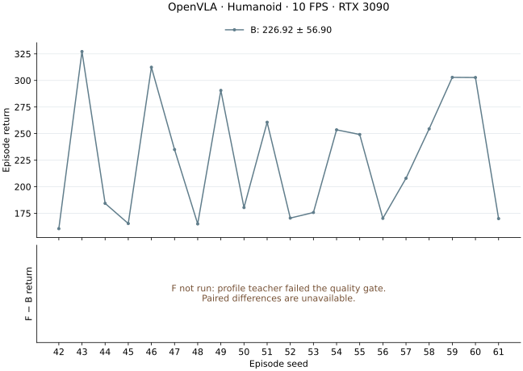
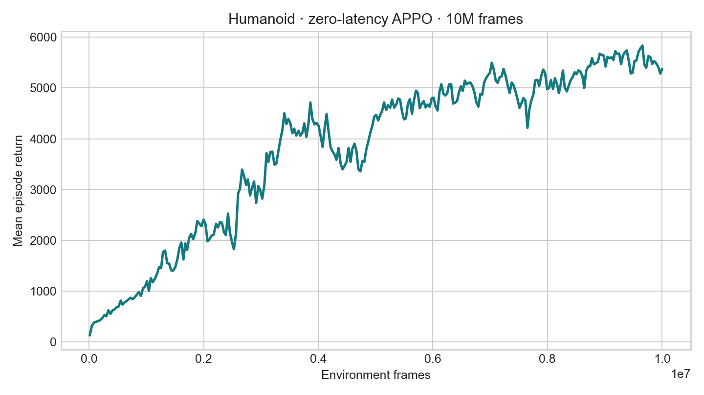

Results / final report
Results at a glance
All three profile branches stopped before profile-VLA evaluation: Pi0.5 and OpenVLA at teacher quality assessment, GR00T at the collection-attempt ceiling. Completed stages and unavailable results are distinguished below.
| Model | B · zero-trained | F · profile-trained | Mean gain |
|---|---|---|---|
| Pi0.5Scientific stop | 891.67 ± 623.80 | — | — |
| GR00TScientific stop | 1,158.63 ± 646.19 | — | — |
| OpenVLAScientific stop | 226.92 ± 56.90 | — | — |
Return = mean ± population SD. B/F evaluate zero-trained/profile-trained VLAs with measured inference latency. These are within-model comparisons from one training run, not a controlled architecture ranking: clocks, recipes and realized latency distributions differ.
Machine-readable results · Models and data index · All environments
Mean gain = F − B; percentage = (F − B) / B × 100%. An unavailable F has no gain estimate.
Pi0.5 / H1 / 5 FPS / audited 22 September 2026
Pi0.5 measured baseline: 891.67 ± 623.80
No profile-trained F exists: both teacher candidates had 0/20 returns above 5,000. The independent B evaluation is complete; no B/F gain can be estimated.
| Stage | Execution | Episodes | Return mean ± population SD | Mean raw steps |
|---|---|---|---|---|
| Zero VLA · B | RTX 3090 measured | 20 | 891.67 ± 623.80 | 171.60 |
| Profile VLA · F | Not run — teacher gate failed | — | — | — |
Seeds 42–61, 5/5 FPS, cap 1,000 raw steps, one inference worker, H1 and measured-only CUDA-synchronized latency; no added IID delay. Return SD describes episodes from one training run. Separate measured latency realizations and co-resident workloads preclude an equal-latency causal or controlled architecture-ranking claim.
| Stage | Raw steps | Actions | Obs drops | Action drops | Invalid | Action-weighted latency mean ms | P95 ms |
|---|---|---|---|---|---|---|---|
| B | 3432 | 3291 | 121 | 0 | 0 | 175.86 | 194.04 |
Finite preclip commands use the native environment Box clip; clipping is not an invalid action. State is bound through manifest, loader and saved-model provenance; per-step state vectors were not recorded. B audit and exact checkpoint · Pipeline and stage record. B evidence is locally audited and has not been uploaded in this report update.
All 20 measured seeds
| Seed | B return | Raw steps |
|---|---|---|
| 42 | 1,232.30 | 252 |
| 43 | 545.74 | 107 |
| 44 | 1,186.12 | 217 |
| 45 | 438.98 | 86 |
| 46 | 285.71 | 57 |
| 47 | 1,738.37 | 315 |
| 48 | 1,360.61 | 264 |
| 49 | 3,145.45 | 578 |
| 50 | 581.16 | 113 |
| 51 | 582.13 | 114 |
| 52 | 621.59 | 130 |
| 53 | 439.43 | 87 |
| 54 | 885.51 | 153 |
| 55 | 766.33 | 156 |
| 56 | 612.42 | 128 |
| 57 | 650.77 | 126 |
| 58 | 808.21 | 156 |
| 59 | 553.65 | 113 |
| 60 | 533.51 | 105 |
| 61 | 865.41 | 175 |
Pi0.5 / H1 / 5 FPS /
Pi0.5: profile teacher did not meet the quality gate
Final and training-best each scored 1,538.29 ± 686.65 over the same 20 deterministic evaluation seeds. Both had 0 / 20 returns strictly above 5,000; the maximum was 3,329.05. The tie selects Final. The full step/action/reward/clock audit passed.
No E10, probe or data rollout followed. No profile-trained VLA or F result exists for this branch. The uploaded small-model checkpoint preserves this outcome for inspection; publication does not mean the teacher passed acceptance. The measured zero-trained B evaluation is complete; F remains unavailable.
| Stage | Protocol / count | Return mean ± SD | Outcome |
|---|---|---|---|
| L0 VLA | Zero-latency simulation / 20 | 6,667.56 ± 46.18 | Audited; 20,000 raw steps |
| P | RTX 3090 / 5 × 10 episodes | — | 6,957 samples Mean 182.02 ms · P95 198.61 ms |
| Teacher Final | Profile IID / 20 paired seeds | 1,538.29 ± 686.65 | Selected on tie; 0/20 >5,000 |
| Teacher training-best | Profile IID / same 20 seeds | 1,538.29 ± 686.65 | 0/20 >5,000 |
Return variability is population SD across episodes from one trained model, not variation across independent training seeds. The >5,000 gate applies to teacher demonstrations, not VLA acceptance. L0 simulation is not a measured real-time baseline.
Training and latency provenance
L0 Pi0.5 used fresh QwenPI_v3 with the fixed Qwen3-VL-4B backbone, 5,000 updates, global batch128 (micro32 × accumulation2 × two GPUs), GC disabled, ZeRO-2, seed 42, RGB224, native state376/action17, H1, four inference timesteps and two diffusion repeats. Native Humanoid-v4 physics and torque clipping ±0.4 were preserved. State min-max normalization is fitted to train only and applied once. The original micro64 smoke OOM was retained; the approved micro32 run completed.
The independent profile APPO teacher kept the original seed 2222, MLP 64×64 and 10M-step target; the saved Final contains 10,002,432 counted steps (train step 19,536). Its training-log best mean of 3,824.753 is not the formal evaluation result. Final/best evaluation used seeds 104771–104790, cap 1,000, 5/5 FPS and its own profile IID distribution, one-worker simulated capacity. Mean episode length was 287.65; each candidate had 5,753 raw steps, 219 legitimate observation drops and zero invalid/dropped actions. Observation drops were counted, not made into an extra acceptance gate.
P excluded 100 warmup samples per session (500 total). Sessions0,2,3 recorded warmup drift warnings, retained in the evidence. Across 7,211 observation attempts there were 254 capacity drops and 6,957 admitted latency samples. Sampling was capped at 60 seconds per episode, excluding initialization/reset/warmup, with raw cap 900. Those P limits do not change teacher or B/F caps.


Pi0.5 teacher: all 20 paired seeds
| Seed | Final | Training-best | Final / best >5,000 |
|---|---|---|---|
| 104771 | 1,799.01 | 1,799.01 | No / no |
| 104772 | 1,224.24 | 1,224.24 | No / no |
| 104773 | 1,308.09 | 1,308.09 | No / no |
| 104774 | 1,005.17 | 1,005.17 | No / no |
| 104775 | 1,787.93 | 1,787.93 | No / no |
| 104776 | 466.59 | 466.59 | No / no |
| 104777 | 929.10 | 929.10 | No / no |
| 104778 | 1,606.41 | 1,606.41 | No / no |
| 104779 | 1,484.06 | 1,484.06 | No / no |
| 104780 | 1,149.36 | 1,149.36 | No / no |
| 104781 | 948.14 | 948.14 | No / no |
| 104782 | 874.20 | 874.20 | No / no |
| 104783 | 2,619.03 | 2,619.03 | No / no |
| 104784 | 1,689.73 | 1,689.73 | No / no |
| 104785 | 1,199.19 | 1,199.19 | No / no |
| 104786 | 3,329.05 | 3,329.05 | No / no |
| 104787 | 2,130.90 | 2,130.90 | No / no |
| 104788 | 2,707.90 | 2,707.90 | No / no |
| 104789 | 1,222.44 | 1,222.44 | No / no |
| 104790 | 1,285.29 | 1,285.29 | No / no |
Selected teacher checkpoint · Evaluation traces and source hashes · Audited latency profile · L0 VLA checkpoint · Exact Pi0.5 stage record
The checkpoint is an inference export containing only model tensors and training counters; all 15 tensors reloaded bit-identically on CPU. Source Final SHA 72c76edb…; exported inference SHA 6805d511…. Optimizer and W&B cache are excluded. OpenVLA and GR00T below retain their original clocks and recipes; no controlled architecture ranking is claimed.
Model 01 / GR00T · H1 · 5 FPS
GR00T: collection budget reached
The selected teacher produced 16 eligible specs in 120 total attempts, short of the required 100. The budget includes the original 12-attempt probe; 104 attempts were rejected. The strict return >5,000 gate and attempt ceiling were preserved.
No replay was started. The 16 accepted specs are reset seeds and admission records, not a replayed demonstration dataset. Rejected attempts are documented by counters; per-attempt returns for the 104 rejections were not persisted and are not reconstructed. No profile raw parquet, profile VLA training or F evaluation was produced. Exporter exit 1 records the expected insufficient-data stop at 00:27:37 UTC on September 18, not a relaxed gate or added attempt budget.
| Checkpoint / stage | Execution | Episodes | Return mean ± SD | Mean raw steps |
|---|---|---|---|---|
| Zero VLA · L0 | Simulated, zero latency | 20 | 6,225.77 ± 1,077.26 | 920.40 |
| Zero VLA · B | 3090 real-time, measured | 20 | 1,158.63 ± 646.19 | 220.65 |
| Profile teacher · E | Simulated IID, one worker | 10 | 2,883.10 ± 1,804.11 | 484.70 |
| Profile VLA · F | Not run — collection budget reached | — | — | — |
The >5,000 threshold is a teacher-demonstration filter, not a VLA acceptance rule. L0 simulation, measured B and teacher IID evaluation are different conditions. Statistics cover episodes from one training run, not independent training seeds.
What the measured baseline establishes
B uses seeds 42–61, cap 1,000, measured-only latency, one inference worker and 5 FPS. Its mean of episode latency means is 117.25731 ms; observation drops, action drops and invalid actions are all zero. Across 4,413 raw steps, the 4,393 within-episode intervals average 200.00292 ms (198.94464–201.12287 ms). Logged commands may be pre-clip; native Humanoid torque clipping remains ±0.4.
P uses 5 sessions × 10 episodes, cap 900 and no FPS calibration. Its observation-to-action distribution has mean 118.37880 ms and P95 125.04214 ms. This observation-level profile statistic is distinct from B's mean of episode means.
Baseline: all 20 episode seeds
| Seed | Return | Length | Episode mean latency (ms) |
|---|---|---|---|
| 42 | 385.49 | 72 | 116.352 |
| 43 | 446.14 | 92 | 117.826 |
| 44 | 2531.19 | 468 | 117.943 |
| 45 | 808.15 | 150 | 118.672 |
| 46 | 787.41 | 154 | 117.140 |
| 47 | 1380.65 | 266 | 118.143 |
| 48 | 659.41 | 138 | 118.570 |
| 49 | 589.17 | 119 | 117.682 |
| 50 | 1682.05 | 315 | 118.433 |
| 51 | 760.79 | 158 | 117.970 |
| 52 | 1373.75 | 275 | 116.161 |
| 53 | 450.82 | 81 | 116.011 |
| 54 | 604.69 | 117 | 117.169 |
| 55 | 2203.69 | 417 | 118.409 |
| 56 | 969.80 | 174 | 116.260 |
| 57 | 1617.46 | 309 | 116.834 |
| 58 | 722.14 | 141 | 114.884 |
| 59 | 2393.27 | 435 | 116.559 |
| 60 | 1501.61 | 276 | 116.999 |
| 61 | 1304.89 | 256 | 117.128 |
Teacher checkpoint selection and admission
The original fresh APPO recipe keeps seed 2222 and a 10M-frame target (actual Final: 10,002,432 frames / step 19,536). Training-best, at 9,875,456 frames / step 19,288, was selected by higher held-out mean; ties would select Final. The filename's training reward statistic is not the held-out result.


Both checkpoint evaluations use seeds 104771–104790 with the actual-profile IID latency model. E10 reuses 104771–104780, and its returns equal the selected checkpoint's first ten results; it is not independent evidence. The original probe's three accepted specs, seeds and attempt counters were retained. Only their split labels were aligned with the eventual 100-episode plan before the bounded continuation.
Teacher: all 20 held-out seeds
| Seed | Final return | Best return | Final / best >5,000 |
|---|---|---|---|
| 104771 | 532.82 | 453.62 | no / no |
| 104772 | 2246.96 | 6127.48 | no / yes |
| 104773 | 1176.30 | 3690.52 | no / no |
| 104774 | 6122.42 | 514.06 | yes / no |
| 104775 | 3522.16 | 2465.33 | no / no |
| 104776 | 5483.73 | 2402.62 | yes / no |
| 104777 | 4798.23 | 4275.79 | no / no |
| 104778 | 3019.64 | 1843.91 | no / no |
| 104779 | 2317.59 | 5201.68 | no / yes |
| 104780 | 3563.02 | 1856.02 | no / no |
| 104781 | 2714.80 | 2665.53 | no / no |
| 104782 | 1349.54 | 1857.42 | no / no |
| 104783 | 1185.51 | 4983.31 | no / no |
| 104784 | 5787.73 | 2798.25 | yes / no |
| 104785 | 2179.27 | 6222.92 | no / yes |
| 104786 | 1082.28 | 2305.28 | no / no |
| 104787 | 2813.84 | 6178.00 | no / yes |
| 104788 | 1734.59 | 1277.23 | no / no |
| 104789 | 1981.68 | 1563.84 | no / no |
| 104790 | 2082.63 | 2038.04 | no / no |
Latency, observations and execution
| Metric | B | F |
|---|---|---|
| Mean of episode latency means (ms) | 117.26 | Not run |
| Mean raw steps | 220.65 | Not run |
| Dropped observations | 0 | Not run |
| Dropped actions | 0 | Not run |
| Invalid actions | 0 | Not run |
L0 simulation, measured B/F and teacher E are distinct evaluations. E10 reuses the selected teacher’s first ten selection seeds; it is not an independent extra seed block.
Teacher E10 source / step audit · Table values, definitions and provenance
GR00T / Training and provenance
Training, data and evaluation contract
| Stage | Completed result | Evidence |
|---|---|---|
| Zero VLA | 5,000 updates; seed 42; global batch 64. Original APPO H1 data reused; L0 simulation completed. | Stage record |
| P · latency profile | 5 × 10 episodes on RTX 3090; 9,660 samples; mean 118.38 ms / P95 125.04 ms. | Stage record |
| S / E · APPO teacher | Fresh APPO, 10M target frames. Selected training best: 3,036.04 ± 1,802.44 over 20 selection episodes. E10 reported in the evaluation table. | Stage record |
| R / C · demonstrations | 16 eligible specs / 120 attempts; target 100 unmet. No replay or converted dataset. | Stage record |
| V · profile VLA | Not run: upstream teacher/data gate stopped this branch. | Stage record |
| F · measured real-time | Not run; no final return or gain estimate. | Stage record |
Full training recipe, data contract and provenance
Native Humanoid-v4 physics, rewards and termination are retained. GR00T uses one RGB224 observation, ordered 376D state, 17 native torques in [−0.4, 0.4], H1, and 5 FPS environment/observation clocks. L0 is fresh QwenGR00T / DiT-B training for 5,000 updates, seed 42, global batch 64 = microbatch 16 × accumulation 4 on one H200; 4 inference timesteps and 8 diffusion repeats, with train-only state min-max applied once. The new profile teacher is fresh APPO with IID seed 0 and no latency-info feature. No profile VLA initialization or updates occurred.
Model 02 / OpenVLA · H1 results
OpenVLA: teacher gate stop
The OpenVLA label denotes QwenOFT. Environment and observation clocks are 10 FPS; seeds 42–61 identify the matched real-time episode block. This result is separate from the GR00T H1 / 5 FPS run.
| Checkpoint / stage | Execution | Episodes | Return mean ± SD | Mean raw steps |
|---|---|---|---|---|
| Zero VLA · L0 | Simulated, zero latency (historical clock) | 20 | 272.06 ± 36.17 | 52.20 |
| Zero VLA · B | 3090 real-time, measured | 20 | 226.92 ± 56.90 | 41.75 |
| Profile teacher · E | Simulated IID, one worker | 10 | 1,036.93 ± 280.76 | 196.90 |
| Profile VLA · F | Not run — teacher gate failed | — | — | — |


Adaptation, training and stage-by-stage evidence · Exact paired results and sources
L0 and measured B/E/F evaluations use their separately stated clocks and seed protocols. Tables do not imply matched L0 and real-time episodes.
OpenVLA adaptation and training details
01 / Adaptation
Adaptation
The runtime probe renders 480×480 RGB through NVIDIA EGL.
The agent inspects all seventeen actuators and the 376-dimensional native observation, then builds the task-owned wrapper and RGB+state path. Native dynamics, torque limits, observation order and termination are preserved and checked before training.
Humanoid-v4 state and action order remain native
Runtime facts
Humanoid-v4, Gymnasium 0.29.1, MuJoCo 3.3.7.- Observation: ordered native
Boxvector with 376 values. - Action:
Box(-0.4, 0.4, (17,), float32). dt=0.015 s; default time limit 1,000 environment steps.- Unhealthy torso height terminates an episode early.
Adaptation decisions
- Native 17D action head; no seven-dimensional bridge or padding.
- Pending no-op: seventeen-dimensional all-zero torque.
- 66.67 Hz environment and observation clocks; one raw frame per observation.
- Zero-latency training with
holdand FIFO ordering. - One 224×224 RGB image plus the complete ordered 376D observation enters each VLA sample.
- Online evaluation reads the saved model image size and requests the same 224×224 observation.
State normalization: train-derived min/max normalization maps zero-range dimensions to 0 in conversion and online evaluation, preventing Humanoid's constant world-body fields from becoming NaN.
02 / Zero-latency small model training & evaluation
Zero-latency small model training & evaluation
Ten million frames produce a high-return zero-latency teacher
10,006,528environment frames
seed 2222training seed
5,613.319best training statistic
6,865.5 FPStraining throughput
The run uses synchronous Sample Factory APPO with normalized observations and returns, a native 17D torque policy, and a 376D proprioceptive observation. Training ends at 10,006,528 frames with a late-run mean reward around 5,374 and a valid final checkpoint.

Training command and checkpoints
PATH=/home/lzj/miniconda3/envs/latency/bin:$PATH \
MUJOCO_GL=egl PYOPENGL_PLATFORM=egl PYTHONPATH=. \
python -m training.train \
--config configs/examples/gymnasium/humanoid/small_model_train.yamlBest checkpoint: best_000017672_9048064_reward_5613.319.pth. Final checkpoint: checkpoint_000019544_10006528.pth.
Formal L0 teacher evaluation: 6,331.47 ± 407.20
The same best checkpoint completed a separate 20-episode simulated evaluation: mean return 6,331.47 ± 407.20 (population SD, ddof=0), mean length 966.95 steps, and 13/20 episodes reaching the 1,000-step cap. Seeds are 106951–106970; injected latency is 0 ms and environment/observation rates are 66.67/66.67 FPS. This is a historical teacher evaluation, not a new 5 FPS run. Use this formal result in the L0 → L0 summary column.
Formal summary and per-seed results · Original returns · Checkpoint and protocol
Historical rollout-threshold probe (separate cohort)
5,571.3historical probe mean return
6,388.6median return
8 / 20full 1,000-step episodes
15 / 20return > 5,000
The deterministic L0 probe uses 20 episodes and the best checkpoint. The strict rollout gate is canonical return greater than 5,000; the shortest accepted probe episode lasts 794 steps. This is a rollout-threshold probe, not a full L0–L4 latency sweep.
Teacher quality: the subsequent collection accepts 100 of 119 completed probes. The result supports the claim that the small model is a useful synchronous teacher, while avoiding an unsupported claim about latency robustness.

03 / Zero-latency VLA training & evaluation
Zero-latency VLA training & evaluation
Low offline action loss coexists with immediate closed-loop failure
100 / 119accepted / completed episodes
88,608 / 9,614train / validation rows
0.08671final train L1
0.07468held-out L1
Teacher data contract
- Strict episode gate: canonical return greater than 5,000.
- 90 train and 10 validation episodes; 98,222 total decision-step rows.
- One raw RGB image plus normalized ordered 376D state per row.
- Native 17-dimensional applied torque with no carrier padding.
- Converted state and action vectors pass finite-value and dimension checks.
QwenOFT training
- Qwen3-VL-4B-Instruct with a native 17D MLP action head.
- 5,000 steps, L1 loss, action horizon 1, batch 4 × accumulation 4 = 16, seed 42.
- ZeRO-2 CPU optimizer offload on one H100; final
.ptonly. - Held-out L1 is measured over 800 samples.
- W&B run gygefd02.
| Latency | Return mean ± std | Median | Mean length | Length range | Full episodes |
|---|---|---|---|---|---|
| L0 / 0 ms | 272.058 ± 36.173 | 266.697 | 52.2 | 44–66 | 0 / 20 |
Closed-loop result: all 20 episodes terminate within 66 steps, with no invalid or dropped actions. Mean return is only 4.9% of the small-model L0 probe mean. Correct image sizing removes the evaluation mismatch, but the remaining gap still indicates accumulated imitation error or closed-loop distribution shift.

steps_5000_pytorch_model.pt, 20 L0 episodes on H100; every trajectory remains on the early-fall floor.Final-checkpoint evaluation contract
MUJOCO_GL=egl PYOPENGL_PLATFORM=egl PYTHONPATH=.:third_party/starVLA \
python -m latency_bench.run \
--config configs/examples/gymnasium/humanoid/starvla_eval.yaml \
--latency-raw-frames 0Evaluation uses steps_5000_pytorch_model.pt, seed 2222, 20 L0 episodes, a maximum of 1,000 raw environment frames, and the saved 224×224 image input contract.
Source files and interpretation limits
Published models and training data
Teacher data
QwenOFT
W&B summary · post-fix L0 summary · 20 L0 episodes · HF checkpoint and logs
Implementation
Reproduction
figure builder · all plots are generated from the linked compact evidence.
Integrity
SHA256SUMS covers all three figures and their compact source evidence.
Runtime semantics follow the version-matched Gymnasium Humanoid-v4 documentation.
What the completed experiment establishes
- One APPO seed and one QwenOFT seed were trained.
- The 20-episode small-model result is an L0 gate-selection probe, not a comparable multi-latency sweep.
- The teacher dataset contains only high-return behavior and does not deliberately cover falls or recovery.
- The post-fix VLA evidence covers L0 only; it does not establish non-zero-latency behavior.
- Offline L1 is insufficient evidence of control quality; the final VLA must be judged by the failed closed-loop result.
- No checkpoint or rollout Parquet is duplicated in Git; published artifacts live on Hugging Face.
04 / Profiling
Profiling
Both clocks are 10 FPS; simulator physics and the original budget are preserved. QwenOFT uses discretized-text 376D state, 224×224 RGB and 17 native torques. Profiling completed five sessions × ten episodes: 718 admitted samples / 2,145 attempts, 1,427 capacity drops; mean latency 286.64 ms and P95 292.69 ms. Teacher evaluation replays this IID distribution with one worker and capacity drops; training and exporter use action-delay IID without worker occupancy.
Profiling (109 files) and the complete small-model bundle (14 files) were published and hash-verified. Publication receipts and decision limitations are retained below. This outcome applies to the selected checkpoint and original training budget; it does not establish that Humanoid cannot learn with latency.
05 / Baseline VLA evaluation
Baseline VLA evaluation
Evaluate the zero-latency VLA at 10/10 FPS under measured realtime execution, using 20 seeds (42–61), the 3,600-step outer cap and native 1,000-step TimeLimit. No episode reaches 1,000 steps.
| Stage | Episodes | Return mean ± std | Mean steps | Evidence |
|---|---|---|---|---|
| B | 20 | 226.92 ± 56.90 | 41.75 | Summary |
06 / Profile-latency small model training & evaluation
Profile-latency small model training & evaluation
| Stage | Episodes | Return mean ± std | Mean steps | Evidence |
|---|---|---|---|---|
| E | 10 | 1,036.93 ± 280.76 | 196.90 | Summary |
The original-budget IID teacher completed 10,006,528 frames with exit code 0. Independent evaluation and a bounded exporter probe both show short survival with reward dominated by the alive bonus. This checkpoint is unsuitable for this run's sustained-walking demonstrations. No lower collection threshold was selected; rollout, conversion, VLA training and final VLA evaluation were not started. The monitor has been deleted.
| Condition | Episodes | Mean return | Mean length (range) | Full 1,000 steps |
|---|---|---|---|---|
| L0 VLA, measured 3090 baseline | 20 | 226.92 ± 56.90 | 41.75 (29–59) | 0/20 |
| New teacher, simulated IID worker pool | 10 fixed seeds | 1,036.93 ± 280.76 | 196.9 (127–293) | 0/10 |
| New teacher, action-delay IID exporter | 12 completed attempts | 1,275.39 | 244.42 (148–337) | 0/12 |
The teacher makes some forward progress: step-weighted forward velocity is 0.409 m/s in evaluation and 0.372 m/s in the probe. Mean alive / forward reward contributions are 984.5 / 100.6 and 1,222.1 / 113.5, respectively. None of the probe attempts exceeded the original reference return gate of 5,000. The probe records the first 12 parallel completions and can omit longer active episodes; the separate fixed-seed evaluation corroborates the poor-survival finding. No replay or bulk collection was performed.
Quality decision · Teacher evaluation · Exporter motion metrics · Model publication · Profile publication · Run ledger
07 / Profile-latency VLA training & evaluation
Profile-latency VLA training & evaluation
Not run — teacher quality is insufficient. Data collection, conversion, VLA training and final VLA evaluation were not started. No lower collection threshold was selected.
The independent teacher evaluation and bounded exporter probe both end well before the native horizon, with reward dominated by the alive bonus. The completed teacher and profiling artifacts are preserved. This is a result for this checkpoint and training budget, not proof that Humanoid cannot learn with latency.
Models / data / evidence
Models, data and scientific evidence
Final collection-stop, P, B and teacher evidence · Final / best / selected teacher · L0 model and completed zero simulation · Compact results · Models and data index
Training completion, fixed-seed evaluation, publication and the collection-budget stop are recorded separately. Published small evidence must not be described as a new replayed dataset. Full B step/action/latency traces remain on the evaluation server after audit; only compact baseline evidence is claimed as uploaded.
Evaluation scope
| Artifact | GR00T | OpenVLA |
|---|---|---|
| Models, raw data and provenance | Models and data index | Models and data index |
| Evaluation and comparison | Stage results · Normalized tables | Paired returns and sources |
Model weights, datasets and evaluation records are linked below. This report includes the numerical results, plots and experimental protocols.